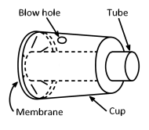
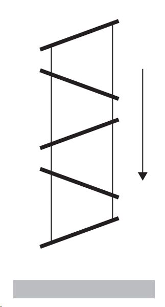
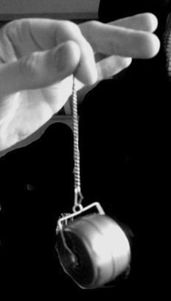

IYPT 2017 Problems
Problems for the 30th IYPT 2017
1. Invent Yourself
Construct a passive device that will provide safe landing for an uncooked hen’s egg when dropped onto a hard surface from a fixed height of 2.5 m. The device must fall together with the egg. What is the smallest size of the device you can achieve?
2. Balloon Airhorn
A simple airhorn can be constructed by stretching a balloon over the opening of a small container or cup with a tube through the other end (see Figure). Blowing through a small hole in the side of the container can produce a sound. Investigate how relevant parameters affect the sound.

3. Single Lens Telescope
A telescope can be built using a single lens, provided that a small aperture is used instead of an eyepiece. How do the parameters of the lens and the hole influence the image (e.g. magnification, sharpness and brightness)?
4. Magnetic Hills
A small amount of a ferrofluid placed in an inhomogeneous magnetic field forms hill-like structures. Investigate how the properties of these structures depend on relevant parameters.
5. Leidenfrost Stars
In the Leidenfrost effect, a water drop placed on a hot surface can survive for minutes. Under certain circumstances, such a drop develops oscillating star shapes. Induce different oscillatory modes and investigate them.
6. Fast Chain
A chain consisting of wooden blocks inclined relative to the vertical and connected by two threads (see Figure) is suspended vertically and then released. Compared to free fall, the chain falls faster when it is dropped onto a horizontal surface. Explain this phenomenon and investigate how the relevant parameters affect the motion.

7. Spiral Waves
Spiral waves and other types of wave patterns may occur on a thin liquid film flowing over a rotating disk. Investigate these wave patterns.
8. Visualising Density
Schlieren Photography is often used to visualise density variations in a gas. Build a Schlieren setup and investigate how well it can resolve density differences.
9. Ball in a Tube
A sealed transparent tube is filled with a liquid and contains a small ball. The tube is inclined and its lower end is attached to a motor such that the tube traces a conical surface. Investigate the motion of the ball as a function of relevant parameters.
10. Pulling Glasses Apart
Put a thin layer of water between two sheets of glass and try to separate them. Investigate the parameters affecting the required force.
11. Hair Hygrometer
A simple hygrometer can be built using human hair. Investigate its accuracy and response time as a function of relevant parameters.
12. Torsion Gyroscope
Fasten the axis of a wheel to a vertical thread that has a certain torsional resistance (see Figure). Twist the thread, spin the wheel, and release it. Investigate the dynamics of this system.

13. Resonating Glass
A wine glass partially filled with liquid will resonate when exposed to the sound from a loudspeaker. Investigate how the phenomenon depends on various parameters.
14. Gee-Haw Whammy Diddle
A gee-haw whammy diddle is a mechanical toy consisting of a simple wooden stick and a second stick that is made up of a series of notches with a propeller at its end. When the wooden stick is pulled over the notches, the propeller starts to rotate. Explain this phenomenon and investigate the relevant parameters.
15. Boiled Egg
Suggest non-invasive methods to detect the degree to which a hen’s egg is cooked by boiling. Investigate the sensitivity of your methods.
16. Metronome Synchronization
A number of mechanical metronomes standing next to each other and set at random initial phases under certain conditions reach synchronous behaviour in a matter of minutes. Investigate the phenomenon.
17. Vacuum Bazooka
A ”vacuum bazooka” can be built with a simple plastic pipe, a light projectile, and a vacuum cleaner. Build such a device and maximise the muzzle velocity.
Authors: Cheong-Eung Ahn, Matej Badin, John Balcombe, Samuel Byland, Nicolas Chevalier, Timotheus Hell, Wee Wei Hsiung, YungYuan Hsu, Dina Izadi, Karel Kolar, Stanislav Krasulin, Frantisek Kundracik, John Lukowski, Maciej Malinowski, Ilya Martchenko, Kerry Parker, Carmen Parton, Anton Rayner, Felix Wechsler, and Evgeny Yunosov
Problem selection committee: John Balcombe, Samuel Byland, Ilya Martchenko
Figures by Samuel Byland, Nicolas Chevalier, and Anton Silyuk